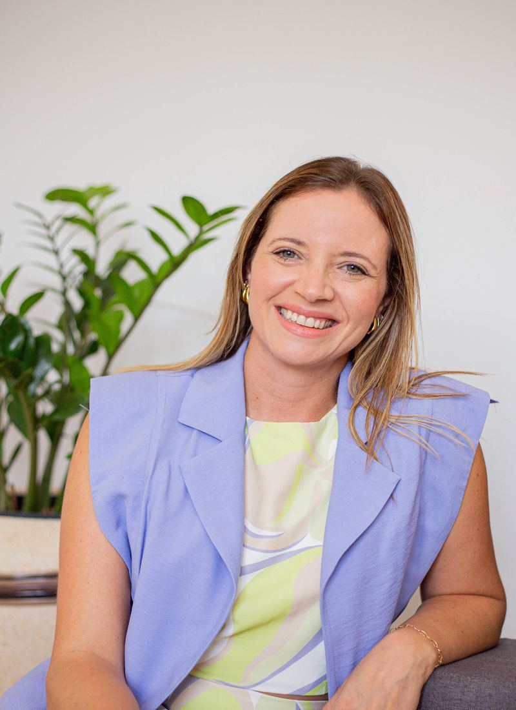

Psicoterapia para crianças, adolescentes e adultos
Talvez você esteja cansada de sustentar tudo sozinha.
Um espaço clínico para ansiedade, sobrecarga emocional, relações difíceis e fases de desenvolvimento que pedem cuidado. Atendimento para crianças, adolescentes e adultos, com método, acolhimento e profundidade.
Presencial em Jarinu/SP - Online para todo o Brasil - CRP 06/93008

Ansiedade nem sempre aparece como crise.
Em crianças, pode surgir como irritação, medos, recusa escolar ou dificuldade de dormir. Em adolescentes, como isolamento, autocobrança, explosões ou queda de rendimento. Em adultos, muitas vezes aparece como controle, exaustão, pensamento acelerado e sensação de estar sempre devendo algo.
Um processo com escuta, direção e cuidado real.
A terapia não é uma conversa solta. O processo muda conforme a idade e a demanda: com crianças, envolve linguagem lúdica e orientação aos responsáveis; com adolescentes, acolhe identidade, pressão social e autonomia; com adultos, aprofunda padrões emocionais, ansiedade e escolhas.
Primeira avaliação
Entendemos a demanda, a idade, o contexto familiar, escolar, social ou profissional e o que precisa ser cuidado primeiro.
Mapa da ansiedade
Investigamos gatilhos, sintomas, pensamentos, comportamentos de evitação e padrões emocionais que mantêm o sofrimento.
Plano para cada fase
Crianças, adolescentes e adultos precisam de recursos diferentes. O plano terapêutico respeita desenvolvimento, linguagem e autonomia.
Intervenções baseadas em evidências
Aplicamos estratégias da TCC, Terapia do Esquema e ACT com ritmo possível, incluindo psicoeducação, regulação emocional e enfrentamento gradual.
Acompanhamento e orientação
O processo é revisado com clareza. Quando envolve crianças e adolescentes, os responsáveis também recebem orientação clínica.
TCC
Clareza sobre pensamentos, emoções e comportamentos que mantêm o sofrimento.
Esquema
Profundidade para compreender padrões antigos que continuam organizando escolhas atuais.
ACT
Flexibilidade psicológica para agir com mais presença, valores e autonomia.
Autoridade clínica sem perder presença humana.
Sou Michelle Donegá dos Santos, psicóloga clínica. Minha atuação integra ciência, escuta ativa e raciocínio clínico profundo para construir um processo terapêutico que faça sentido para a pessoa que está diante de mim, seja criança, adolescente ou adulta.
Trabalho com psicoterapia baseada em evidências, especialmente Terapia Cognitivo-Comportamental, Terapia do Esquema e ACT, com atenção especial para ansiedade e padrões emocionais. A técnica importa, mas ela precisa encontrar uma pessoa inteira: sua história, seus vínculos, seus medos, suas defesas e suas possibilidades.
Acolher não é suavizar tudo. É oferecer um espaço seguro o bastante para olhar com honestidade, nomear o que dói e construir um caminho possível.
Cuidado clínico para diferentes idades e formas de ansiedade.
A ansiedade é um dos eixos centrais do atendimento, mas ela aparece de formas muito diferentes em cada fase da vida. A clínica olha para sintomas, contexto, vínculos e desenvolvimento.
Ansiedade infantil
Medos, insegurança, queixas físicas, irritabilidade, dificuldade de separação, sono e adaptação escolar.
Adolescentes
Ansiedade social, autoestima, comparação, pressão escolar, identidade, conflitos familiares e regulação emocional.
Adultos ansiosos
Preocupação excessiva, crises, controle, autocobrança, culpa, procrastinação emocional e exaustão.
Orientação parental
Leitura clínica do comportamento, manejo emocional, limites, rotina e apoio aos responsáveis no processo terapêutico.
Relacionamentos
Limites, dependência emocional, conflitos, repetições, comunicação difícil e escolhas afetivas.
Burnout e autocobrança
Esgotamento, perfeccionismo, pressão profissional, dificuldade de descansar e sensação de nunca bastar.
Sofisticação, aqui, significa cuidado preciso.
Nada de promessa fácil, frase pronta ou psicologia de efeito. O trabalho é ético, humano e tecnicamente sustentado, com leitura clínica adequada para infância, adolescência e vida adulta.
Atendimento por fase da vida
A linguagem e as intervenções mudam para crianças, adolescentes e adultos, sem perder rigor clínico.
Especial atenção à ansiedade
O trabalho identifica gatilhos, evitação, sintomas físicos, pensamentos antecipatórios e recursos de enfrentamento.
Raciocínio clínico profundo
Antes de intervir, entendemos a função dos sintomas, o contexto familiar e os padrões que os mantêm.
Abordagem baseada em evidências
Método clínico com TCC, Terapia do Esquema, ACT e instrumentos quando fizer sentido.
Cuidado ético e seguro
Sigilo, clareza de combinados, orientação aos responsáveis quando necessário e decisão sem pressão.
Clínica, produtos para psis, app e empresas no mesmo universo.
Além da psicoterapia, Psi Real reúne inventários clínicos, recursos para psicólogas, biblioteca, aplicativo e soluções para empresas. Cada frente tem uma função clara, sem perder a mesma identidade de cuidado e profundidade.
Inventários Psi Real
Produto para psicólogas com instrumentos clínicos, envio ao paciente e visualização organizada das respostas em um único fluxo.
Painel clínico integrado
O painel de esquemas faz parte dos inventários, ajudando a transformar respostas em leitura clínica sem virar um produto separado.
App e biblioteca Psi Real
O aplicativo e a biblioteca ampliam o ecossistema com conteúdo, materiais e recursos práticos para psicólogas.
Supervisão clínica
Uma frente própria para psicólogas que buscam mais segurança técnica, raciocínio clínico e desenvolvimento profissional.
Palestras e soluções para empresas
A frente corporativa leva saúde mental, ansiedade, liderança e autocuidado para equipes com repertório clínico e experiência organizacional.
Antes de começar
Algumas respostas para tornar o primeiro passo mais simples.
Uma primeira conversa, sem pressa e sem compromisso.
Se você sente que chegou a hora de parar de atravessar tudo sozinha, deixe seus dados. O retorno é feito pelo WhatsApp.
Você não precisa continuar vivendo no automático.
Para uma criança, um adolescente ou um adulto, ansiedade não precisa virar modo de vida. O primeiro passo não precisa resolver tudo. Ele só precisa começar.
Agendar conversa inicial